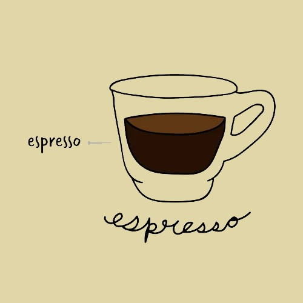
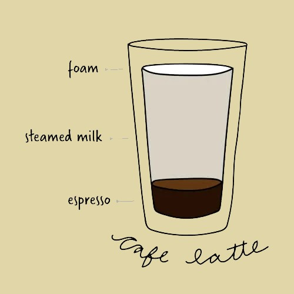
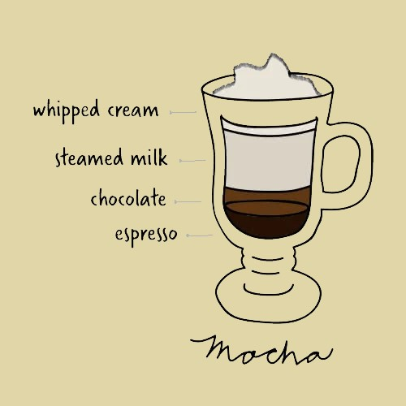

| Products | |
|---|---|
|  | Espresso |
The espresso, also known as a short black, is approximately 1 oz. of highly concentrated coffee. Although simple in appearance, it can be difficult to master. | |
| Cappuccino |  |
This creamy coffee drink is usually consumed at breakfast time in Italy and is loved in the United States as well. It is usually associated with indulgence and comfort because of its thick foam layer and additional flavorings that can be added to it. | |
|  | Cafe Latte |
Cafe lattes are considered an introductory coffee drink since the acidity and bitterness of coffee are cut by the amount of milk in the beverage. Flavoring syrups are often added to the latte for those who enjoy sweeter drinks. | |
| Mocha |  |
The mocha is considered a coffee and hot chocolate hybrid. The chocolate powder or syrup gives it a rich and creamy flavor and cuts the acidity of the espresso. | |